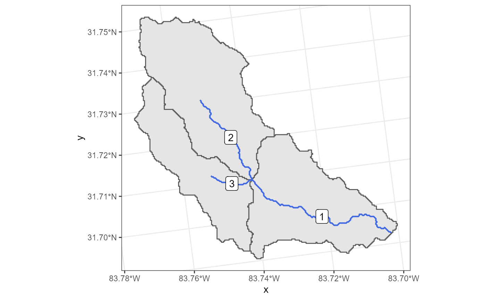
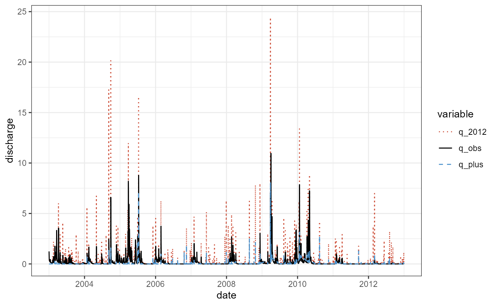

SWATplusR
If you did not install SWATplusR yet you can do that now running the following lines in R.
# If the package remotes is not installed run first:
install.packages('remotes')
remotes::install_github('chrisschuerz/SWATplusR')Before we start exploring the package load SWATplusR.
SWATdata provides a set of fast running, lightweight SWAT2012 and SWAT+ model setups of a head watershed of the Little River Experimental Watershed [LREW; Bosch et al. (2007)]. Additionally, discharge observations at the outlet of the demo catchment (gauge J of LREW) and spatial information of the SWAT model setups are available from SWATdata. The SWATdata GitHub page gives an overview of the available data sets.
Demo data can be loaded with the function load_demo(). With the input argument dataset you can define which SWAT project data you want to load. To load a SWAT project folder define dataset = 'project'. The path defines the path on your local hard drive where you want to store the SWAT project folder. Caution: *Please try to avoid blanks in your path names (e.g. ‘C:/this is a/path with blanks’). This can cause issues when running the model. Try to use e.g. ’_’ in your path names instead.* As the SWAT project is available as SWAT+ and as SWAT2012 project you have to specify the version of the SWAT project you want to load. Use version = 'plus' to load a SWAT+ project and version = '2012' to load a SWAT2012 version of the project. SWAT+ is under constant development and new model revisions are released from time to time. I try to keep SWATdata and the SWAT+ demo projects up to date and provide at least a few of the last SWAT+ revisions as demo projects. If no revision number is specified the most recent SWAT+ model is loaded. You can, however, also load a SWAT+ project with that was built for a specific SWAT+ revision by providing for example the input argument revision = 59.3 to load a SWAT+ revision 59.3 model setup. Please check the SWATdata GitHub page to see which model setups are available. The two examples below load the most recent SWAT+ model setup and the available SWAT2012 setup.
# The path where the SWAT demo project will be written
demo_path <- 'Define:/your/path'
# Loading a SWAT+ demo project
path_plus <- load_demo(dataset = 'project',
path = demo_path,
version = 'plus')
# Loading a SWAT2012 demo project
path_2012 <- load_demo(dataset = 'project',
path = demo_path,
version = '2012')In the case of a SWAT project load_demo() saves the defined SWAT project in the file path that was defined with path = demo_path and returns the final demo project path as a character string in R. I assigned these paths to the variables path_plus and path_2012 to use them later in the model runs.
SWATdata also provides daily discharge records for the outlet of the demo catchment (Gauge J of LREW) for the time period 1968-01-01 until 2012-12-31. Observation data are useful for the model evaluation. These date will be used in several examples with the SWAT demo projects. You can load the observation data again using the function load_demo(). To access the observation data set you have to define dataset = 'observation'. The other input arguments are not required in this case as the observation data are the same for all demos. When loading the observation data set load_demo() returns a data frame with a date column and a column for the mean daily discharge at that date. In the code below the observation data frame is assigned to the variable q_obs.
q_obs <- load_demo(dataset = 'observation')
q_obs#> # A tibble: 16,437 x 2
#> date discharge
#> <date> <dbl>
#> 1 1968-01-01 0.16
#> 2 1968-01-02 0.57
#> 3 1968-01-03 0.61
#> 4 1968-01-04 0.37
#> 5 1968-01-05 0.25
#> 6 1968-01-06 0.2
#> 7 1968-01-07 0.21
#> 8 1968-01-08 0.22
#> 9 1968-01-09 0.18
#> 10 1968-01-10 0.34
#> # ... with 16,427 more rowsA quick plot of the observation data q_obs shows the daily mean discharge at Gauge J for the years 1968 to 2012 in \(m^3 s^{-1}\).
plot(q_obs, type = 'l')
With the functions run_swatplus() and run_swat2012() you can perform simulations in a SWAT+ or a SWAT2012 project folder that is located on the local hard drive. SWAT model simulations write a large range of output variables after a simulation run. Usually only a few variables are analyzed (e.g. in-stream discharge or nutrient loads). With the function define_output() you can specify the output variables that are returned to R after the simulation run. Thus, the minimum information you have to provide to perform a model simulation is where your project is located with the input argument project_path and which simulation outputs should be returned after the simulation defined with the input argument output. The output variables are always specified with the function define_output() and passed through with the input argument output. The example below shows a minimum example for a SWAT+ project.
project_path
As the project path we define the path to the previously loaded demo project project_path = path_plus. If you do not want to work with the demo project, but you already want to use your own SWAT project you can define the path to your SWAT ‘TxtInOut’ folder and simply run simulations there. Be aware in this case that the runtime can be much longer for large projects, which might hinder you in testing many things when first playing around with SWATplusR. The demo projects are designed in a way that simulations should not take longer than a few seconds, depending on the machine where it is executed. If you want to use your own SWAT project please consider a few things:
run_swat*() automatically searches for the one SWAT executable in the project folder. If there are no or more than one executables available in the project folder an error is returned as run_swat*() does not know which executable file to use.run_swat*() does some checks for which time periods weather data are available.run_swatplus() to run a SWAT+ project, or run_swat2012() to run a SWAT2012 project.define_output()
The simple example below defines only one output that is returned to R. The definition follows a simple syntax. define_output() requires three input arguments. The file indicates in which file the SWAT output variable of interest is written. As we want to return the discharge in this example we define file = 'channel_sd'. All output files for SWAT+ are listed in the ‘print.prt’ of your SWAT+ project. The variable for the discharge that leaves a channel is called 'flo_out'. We define variable = 'flo_out'. The third input argument is unit. unit defines for which units, in this case for which channels, we want to extract the output variable. The SWAT+ demo project has only one channel and therefore we define unit = 1. The correct channel ID is listed in the ‘chandeg.con’ file in the SWAT+ project folder. If you have, many channels and you want to compare your simulation outputs with observation data, make sure to select the correct id that corresponds to your gauge location.
q_sim_plus <- run_swatplus(project_path = path_plus,
output = define_output(file = 'channel_sd',
variable = 'flo_out',
unit = 1))
#> Building 1 thread in 'Define:/your/path/swatplus_demo/.model_run':
#> Thread 1 of 1 Time elapsed: 0S Time remaining: 0S
#> Completed 1 thread in 0S
#> Performing 1 simulation on 1 core:
#> Simulation 1 of 1 Time elapsed: 3S Time remaining: 0S
#> Completed 1 simulation in 3SThe syntax of define_output() that was shown above for SWAT+ is the same for SWAT2012 projects. The only difference between the two models in the output definition is how to correctly address the output variables. The output files are organized differently in SWAT+ and SWAT2012. SWAT2012 simulations generate output files that are called ‘output.’ followed by a suffix that defines the type of output. Subbasin outputs are stored in the ‘.sub’ file, HRU outputs in the ‘.hru’ file, and channel outputs for example in the ’.rch’ file. This list is not comprehensive and there are further output files. If you want to return variables from other SWAT2012 output files please please go through the ‘output.’ files in your project folder after performing a simulation run. In the minimum example we define file = 'rch' to access the channel output file. The variable ‘FLOW_OUT’ defines the discharge that leaves a channel. Therefore, we define variable = 'FLOW_OUT'. Caution: Be aware that the variable definition is case sensitive and variables in SWAT2012 are usually upper case. The SWAT2012 demo project has in total 3 channels. In the output definition we can also define multiple units for which we want to extract outputs. In the example below we define unit = 1:3 which means that we return the ‘FLOW_OUT’ for the channel units 1,2, and 3.
q_sim_2012 <- run_swat2012(project_path = path_2012,
output = define_output(file = 'rch',
variable = 'FLOW_OUT',
unit = 1:3))
#> Building 1 thread in 'Define:/your/path/swat2012_demo/.model_run':
#> Thread 1 of 1 Time elapsed: 3S Time remaining: 0S
#> Completed 1 thread in 3S
#> Performing 1 simulation on 1 core:
#> Simulation 1 of 1 Time elapsed: 4S Time remaining: 0S
#> Completed 1 simulation in 4SThe previous examples illustrated how to extract one variable (but maybe for several units) from the simulation outputs. To extract several variables you can simply combine them in a list(). In the example below we extract several water balance components of the SWAT+ demo simulations. Aggregated variables for a SWAT+ simulation are written to the ‘basin_wb’ file and there is only one spatial unit (the entire basin) written to that file. Therefore, the unit must be 1. Values different from 1 will not return any simulation results:
wb_sim <- run_swatplus(project_path = path_plus,
output = list(precip = define_output(file = "basin_wb",
variable = "precip",
unit = 1),
q_sur = define_output(file = "basin_wb",
variable = "surq_gen",
unit = 1),
q_lat = define_output(file = "basin_wb",
variable = "latq",
unit = 1),
eta = define_output(file = "basin_wb",
variable = "et",
unit = 1)))
#> Building 1 thread in 'Define:/your/path/swatplus_demo/.model_run':
#> Thread 1 of 1 Time elapsed: 1S Time remaining: 0S
#> Completed 1 thread in 1S
#> Performing 1 simulation on 1 core:
#> Simulation 1 of 1 Time elapsed: 2S Time remaining: 0S
#> Completed 1 simulation in 2SThe output definition in a list has the additional advantage to optionally assign individual names to the variables (e.g. list(name_a = define_output(...))). The variables are returned in the output with that name in R then.
The goal of SWATplusR is to return the SWAT simulations in a tidy format. The simulation results look slightly different if only one simulation was performed, parameters were modified in a run, or multiple parameter sets were used to perform a large number of model evaluations. In general the outputs follow a general structure.
If only one simulation was performed, where no model parameters were modified, run_swat*() returns a tibble (Müller and Wickham, 2019) with a date column and the columns with the simulated values of the extracted variables. The output table of the simulated water balance components has a date column and columns with the four extracted water balance components. The variable names are the individual names that we defined in the output definition:
wb_sim
#> # A tibble: 3,653 x 5
#> date precip q_sur q_lat eta
#> <date> <dbl> <dbl> <dbl> <dbl>
#> 1 2003-01-01 4.28 0.144 2.28 0.425
#> 2 2003-01-02 0.387 0.021 1.68 0.951
#> 3 2003-01-03 0 0.005 1.34 0.081
#> 4 2003-01-04 0 0.001 1.15 0.742
#> 5 2003-01-05 0 0 1.03 0.7
#> 6 2003-01-06 0 0 0.962 0.676
#> 7 2003-01-07 0 0 0.912 0.574
#> 8 2003-01-08 0 0 0.874 0.628
#> 9 2003-01-09 0 0 0.844 0.716
#> 10 2003-01-10 0 0 0.817 0.423
#> # ... with 3,643 more rowsIn case no variable name is assigned in the output definition (as in the simulations of the discharge above), the variable name of the extracted variable is used as the variable name. When several units are defined in define_output() (e.g. in the example above unit = 1:3) a column in the output table is created for each unit and the unit number is added to the variable name. This is the case for the the simulation of ‘FLOW_OUT’ in the example above:
q_sim_2012
#> # A tibble: 3,653 x 4
#> date FLOW_OUT_1 FLOW_OUT_2 FLOW_OUT_3
#> <date> <dbl> <dbl> <dbl>
#> 1 2003-01-01 0.174 0.103 0.413
#> 2 2003-01-02 0.154 0.0956 0.377
#> 3 2003-01-03 0.150 0.0935 0.369
#> 4 2003-01-04 0.148 0.0921 0.363
#> 5 2003-01-05 0.146 0.0912 0.359
#> 6 2003-01-06 0.145 0.0906 0.357
#> 7 2003-01-07 0.144 0.0901 0.355
#> 8 2003-01-08 0.144 0.0897 0.354
#> 9 2003-01-09 0.143 0.0894 0.353
#> 10 2003-01-10 0.143 0.0890 0.352
#> # ... with 3,643 more rowsThe tidy writing of the simulation results allows an easy processing of the data in the analysis workflow in R. Here is a quick example how to ‘wrangle’ the simulated discharge data with dplyr (Wickham et al., 2019) and tidyr (Wickham and Henry, 2018) and plotting it with ggplot2:
library(tidyr)
#> Warning: package 'tidyr' was built under R version 4.1.2
library(dplyr)
library(ggplot2)
q_plot <- q_sim_2012 %>%
select(date, FLOW_OUT_3) %>%
rename(q_sim = FLOW_OUT_3) %>%
left_join(., q_obs, by = "date") %>%
rename(q_obs = discharge) %>%
gather(., key = "variable", value = "discharge", -date)
ggplot(data = q_plot) +
geom_line(aes(x = date, y = discharge, col = variable, lty = variable)) +
scale_color_manual(values = c("black", "tomato3")) +
theme_bw()
The capability to alter model parameters in a SWAT simulation is an essential option in SWATplusR. Model parameters can be modified in a SWAT simulation by passing the respective parameters with the argument parameter in run_swat*(). A single parameter set can be provided as a vector. Many parameter sets that should be used in simulations have to be provided in a tibble.
To modify a model parameter information on the type of change (relative, absolute change etc.), the extent of the change (e.g. all or selected subbasins/land uses/ soil types etc.) and the magnitude of change are required. In SWATplusR most of that information is passed with the variable name. Thus, the variable names use a very specific syntax. A parameter name can consist of several parts, where some are required and others are optional. The minimum requirements for the elements of a parameter name are the actual name of the parameter in the model an the type of change. Options for the type of change are ‘relchg’ and ‘pctchg’ to alter a parameter by a fraction or a percentage of the initial parameter value, “abschg” to add an absolute value to the initial parameter value, or “absval” to replace a parameter by an absolute value. In the example below the parameter curve number (‘cn2’) that is defined on HRU level will be increased by the absolute value 5 in all HRUs.
par_mod <- c("cn2.hru|change = abschg" = 5)Many options to constrain a parameter change are available in SWATplusR (in the current version of SWATplusR only for SWAT2012). Constraints for the alteration of a parameter is added with a ‘|’ and a logical expression. Below you find an example for the change of the curve number ‘CN2’ in a SWAT2012 setup, that is only effective for the subbasins 1 to 5 and only for the land uses “WWHT” and “CORN.” Also take care that ‘CN2’ is a parameter of the ‘.mgt’ input file:
par_mod <- c("CN2.mgt|change = abschg | sub == 1:5 | luse %in% c('WWHT', 'CORN') " = 5)Individual parameter names can be assigned with the :: operator. At the beginning of a parameter definition the individual parameter name is provided followed by ‘::’ and the actual parameter definition:
par_mod <- c("my_name::cn2.hru|change = abschg" = 5)To define single parameter set a named vector is generated. The names define the parameters the type of change. Below a single parameter set is generated where all ‘cn2’ values in a SWAT+ model setup are reduced by 5 percent and the ‘alpha.gw’ value was set to 0.5 globally.
par_single <- c("cn2.hru|change = pctchg" = - 5,
"alpha.gw|change = absval" = 0.5)To include the parameter changes in the SWAT+ model execution the defined vector is simply passed with the argument parameter in the run_swatplus() function call:
q_sim <- run_swatplus(project_path = path_plus,
output = define_output(file = "channel",
variable = "flo_out",
unit = 1),
parameter = par_single)
#> Building 1 thread in 'Define:/your/path/swatplus_demo/.model_run':
#> Thread 1 of 1 Time elapsed: 1S Time remaining: 0S
#> Completed 1 thread in 1S
#> Performing 1 simulation on 1 core:
#> Simulation 1 of 1 Time elapsed: 2S Time remaining: 0S
#> Completed 1 simulation in 2SThe same workflow works with several parameter sets when they are defined in a tibble. The example below uses the same parameters as above, but in this case a tibble was defined with 8 random realizations for each parameter within the defined boundaries.
par_set <- tibble("cn2.hru|change = abschg" = runif(8,-15,10),
"alpha.gw|change = absval" = runif(8, 0, 1))
par_setThe implementation in the run_swat*() function works the same way. To execute multiple SWAT simulations with many parameter sets the SWATplusR package provides an option parallel computing. To perform a parallel model execution the number of parallel threads is defined with the input argument n_thread.
q_sim <- run_swatplus(project_path = path_plus,
output = list(q_sur = define_output(file = "basin_wb",
variable = "surq_gen",
unit = 1),
q_lat = define_output(file = "basin_wb",
variable = "latq",
unit = 1)),
parameter = par_set,
n_thread = 4)
#> Building 4 threads in 'Define:/your/path/swatplus_demo/.model_run':
#> Thread 2 of 4 Time elapsed: 1S Time remaining: 1S
#> Completed 4 thread in 2S
#> Performing 8 simulations on 4 cores:
#> Simulation 4 of 8 Time elapsed: 4S Time remaining: 4S
#> Completed 8 simulations in 11SWhen parameters were altered in a simulation run, the performed parameter changes are saved in the simulation outputs by default. As a consequence, the entire simulation output cannot be provided in a single tibble anymore and will be returned as a list with two main list entries. output$parameter provides all information on the parameter changes that were performed in the simulation runs. output$simulation provides the simulation results. The outputs of the previous model execution of the SWAT+ demo project has the following structure
The list entry $parameter holds two tibbles. The first tibble shows the values of the parameter changes of each model evaluation that was performed with run_swat*(). Each row of the tibble represents a parameter set that was used in a model run. The second tibble provides information on the parameter names, their actual names in the model, the type of change and the constraints on the parameter:
q_sim$parameter
#> $values
#> # A tibble: 8 x 2
#> cn2 alpha
#> <dbl> <dbl>
#> 1 0.360 0.401
#> 2 -11.3 0.151
#> 3 -11.1 0.752
#> 4 -5.67 0.608
#> 5 -9.94 0.590
#> 6 8.37 0.571
#> 7 4.52 0.408
#> 8 0.0230 0.115
#>
#> $definition
#> # A tibble: 2 x 4
#> par_name parameter file_name change
#> <chr> <chr> <chr> <chr>
#> 1 cn2 cn2 hru abschg
#> 2 alpha alpha gw absvalThe list entry $simulation provides the simulation runs that corresponds to each parameter set. Different to the single simulation without parameter changes is that now the simulated variables are not saved in a single tibble, but as a list of tibbles. In this case each simulated variable is saved in one tibble, where the first column of each tibble is the ‘date’ and the other columns are the individual simulation runs. Now the tibbles are named by the variables and each individual run saved in the tibbles is named ‘run_1’ to run ‘run_n.’ In the example two variables were simulated, q_out$simulation$q_sur and q_out$simulation$q_lat. Each tibble holds the date and the runs 1 to 8:
q_sim$simulation
#> $q_sur
#> # A tibble: 3,653 x 9
#> date run_1 run_2 run_3 run_4 run_5 run_6 run_7 run_8
#> <date> <dbl> <dbl> <dbl> <dbl> <dbl> <dbl> <dbl> <dbl>
#> 1 2003-01-01 0.149 0.023 0.024 0.059 0.029 0.335 0.221 0.144
#> 2 2003-01-02 0.022 0.003 0.003 0.009 0.004 0.053 0.035 0.021
#> 3 2003-01-03 0.005 0.001 0.001 0.002 0.001 0.013 0.008 0.005
#> 4 2003-01-04 0.001 0 0 0.001 0 0.003 0.002 0.001
#> 5 2003-01-05 0 0 0 0 0 0.001 0.001 0
#> 6 2003-01-06 0 0 0 0 0 0 0 0
#> 7 2003-01-07 0 0 0 0 0 0 0 0
#> 8 2003-01-08 0 0 0 0 0 0 0 0
#> 9 2003-01-09 0 0 0 0 0 0 0 0
#> 10 2003-01-10 0 0 0 0 0 0 0 0
#> # ... with 3,643 more rows
#>
#> $q_lat
#> # A tibble: 3,653 x 9
#> date run_1 run_2 run_3 run_4 run_5 run_6 run_7 run_8
#> <date> <dbl> <dbl> <dbl> <dbl> <dbl> <dbl> <dbl> <dbl>
#> 1 2003-01-01 2.27 2.52 2.52 2.44 2.51 1.81 2.06 2.28
#> 2 2003-01-02 1.67 1.9 1.90 1.82 1.89 1.32 1.51 1.68
#> 3 2003-01-03 1.34 1.54 1.54 1.47 1.53 1.05 1.21 1.34
#> 4 2003-01-04 1.14 1.32 1.32 1.26 1.31 0.894 1.03 1.15
#> 5 2003-01-05 1.03 1.19 1.19 1.13 1.18 0.802 0.931 1.03
#> 6 2003-01-06 0.956 1.10 1.10 1.05 1.10 0.744 0.866 0.961
#> 7 2003-01-07 0.906 1.04 1.04 0.994 1.03 0.704 0.822 0.911
#> 8 2003-01-08 0.869 0.995 0.994 0.952 0.988 0.675 0.788 0.874
#> 9 2003-01-09 0.838 0.957 0.956 0.917 0.95 0.651 0.761 0.843
#> 10 2003-01-10 0.812 0.925 0.925 0.888 0.919 0.63 0.737 0.817
#> # ... with 3,643 more rowsIn many cases it is advantageous to save the simulations incrementally after each model evaluation, for instance when long simulation runs would be lost if the computer or the R instance crashes, or when the simulation results cannot be stored in the RAM storage at all.
Simulations can be saved incrementally in an SQLite data base on the local hard drive, by passing a name for the save folder with the argument save_file in run_swat*(). By default the data base with the name save_file is saved in the project folder. An individual path for the save_file can be defined with the argument save_path. In case the simulations should be only saved in the data base and not returned back to R, the argument return_output = FALSE has to be set.
These arguments are simply added to the run_swatplus() function call to save the simulations in a data base instead of returning them back to R. Below the arguments are added to the previous simulation:
run_swatplus(project_path = path_plus,
output = list(q_sur = define_output(file = "basin_wb",
variable = "surq_gen",
unit = 1),
q_lat = define_output(file = "basin_wb",
variable = "latq",
unit = 1)),
parameter = par_set,
n_thread = 4,
save_file = "q_sur_lat",
return_output = FALSE)
#> Building 4 threads in 'Define:/your/path/swatplus_demo/.model_run':
#> Thread 2 of 4 Time elapsed: 1S Time remaining: 1S
#> Completed 4 thread in 2S
#> Performing 8 simulations on 4 cores:
#> Simulation 4 of 8 Time elapsed: 3S Time remaining: 3S
#> Completed 8 simulations in 8SYou can see that the function did not return any results in R but generated a folder that we called “q_sur_lat” passed by the argument save_file in the project folder. That folder now contains several data bases. The first data base is called “par_dat.sqlite” and stores the parameter information and the date vector. Further, each of the parallel threads of the simulation generated a data base where each thread wrote the simulation results (This is necessary to avoid access conflicts when writing to data bases in parallel). The simulation data bases are always called “sim_thread_i.sqlite,” where “i” are the indexes of the individual threads (1 to 4 in this case).
SWATplusR provides two options to access the saved simulations. Loading large data bases into the R environment can take a long time. If you only want to know the the content of saved simulations (e.g. to check the successful simulation runs after a crash) you can scan the saved runs with the function scan_swat_run(). The function writes meta information on the saved SWAT simulations into the console. The function returns the following for our saved runs:
# Set the path to the folder where the date bases were saved
path_saved_q <- "Path:/to/the/folder/q_sur_lat"
scan_swat_run(save_dir = path_saved_q)
#> Simulation period:
#> 2003-01-01 to 2012-12-31
#>
#> Simulated variables:
#> q_lat: runs 1 to 8
#> q_sur: runs 1 to 8
#>
#> Parameter set:
#> # A tibble: 8 x 2
#> cn2 alpha
#> <dbl> <dbl>
#> 1 0.360 0.401
#> 2 -11.3 0.151
#> 3 -11.1 0.752
#> 4 -5.67 0.608
#> 5 -9.94 0.590
#> 6 8.37 0.571
#> 7 4.52 0.408
#> 8 0.0230 0.115
#> # A tibble: 2 x 4
#> par_name parameter file_name change
#> <chr> <chr> <chr> <chr>
#> 1 cn2 cn2 hru abschg
#> 2 alpha alpha gw absvalscan_swat_run() returns information on the simulation period, which output variables were saved and which simulation runs were executed for these variables. Further, information on the used model parameter sets is written.
With load_swat_run() you can then load the simulations saved in the data bases. In case the entire set of simulations cannot be loaded in to the RAM storage the function provides the option to only load parts of the saved simulations. In the example below for example we load only the variable “q_lat” and only the first three runs into R:
q_subset <- load_swat_run(save_dir = path_saved_q,
variable = "q_lat",
run = 1:3)
q_subset
#> $parameter
#> $parameter$values
#> # A tibble: 8 x 2
#> cn2 alpha
#> <dbl> <dbl>
#> 1 0.360 0.401
#> 2 -11.3 0.151
#> 3 -11.1 0.752
#> 4 -5.67 0.608
#> 5 -9.94 0.590
#> 6 8.37 0.571
#> 7 4.52 0.408
#> 8 0.0230 0.115
#>
#> $parameter$definition
#> # A tibble: 2 x 4
#> par_name parameter file_name change
#> <chr> <chr> <chr> <chr>
#> 1 cn2 cn2 hru abschg
#> 2 alpha alpha gw absval
#>
#>
#> $simulation
#> $simulation$q_lat
#> # A tibble: 3,653 x 4
#> date run_1 run_2 run_3
#> <dttm> <dbl> <dbl> <dbl>
#> 1 2003-01-01 00:00:00 2.27 2.52 2.52
#> 2 2003-01-02 00:00:00 1.67 1.9 1.90
#> 3 2003-01-03 00:00:00 1.34 1.54 1.54
#> 4 2003-01-04 00:00:00 1.14 1.32 1.32
#> 5 2003-01-05 00:00:00 1.03 1.19 1.19
#> 6 2003-01-06 00:00:00 0.956 1.10 1.10
#> 7 2003-01-07 00:00:00 0.906 1.04 1.04
#> 8 2003-01-08 00:00:00 0.869 0.995 0.994
#> 9 2003-01-09 00:00:00 0.838 0.957 0.956
#> 10 2003-01-10 00:00:00 0.812 0.925 0.925
#> # ... with 3,643 more rowsSWATplusR input arguments
The functions run_swat2012() and run_swatplus() have many further input arguments that allow to control important settings of a SWAT simulation. Here I will just mention a few of the essential ones. A detailed overview of the input arguments is provided in the respective function documentations. The simulation period can be controlled with the arguments start_date and end_date. The format writing the outputs of the simulations in the SWAT project folder is controlled by the arguments output_interval to define whether the simulations are written with daily, monthly or yearly time steps, years_skip to define the simulated years that should be skipped for writing the simulation outputs. With the argument run_index a subset of the provided parameter combinations can be simulated. This is useful, when for instance distributing the simulations on multiple computers, or when continuing the simulations after a crash.
You might have noticed, that running SWAT also provides information on the progress. This is very convenient for long simulation runs with many model evaluations. If you implement the SWAT function into other function calls the writing to the console can be an undesired behavior. You can quiet the function call with the argument quiet = TRUE.